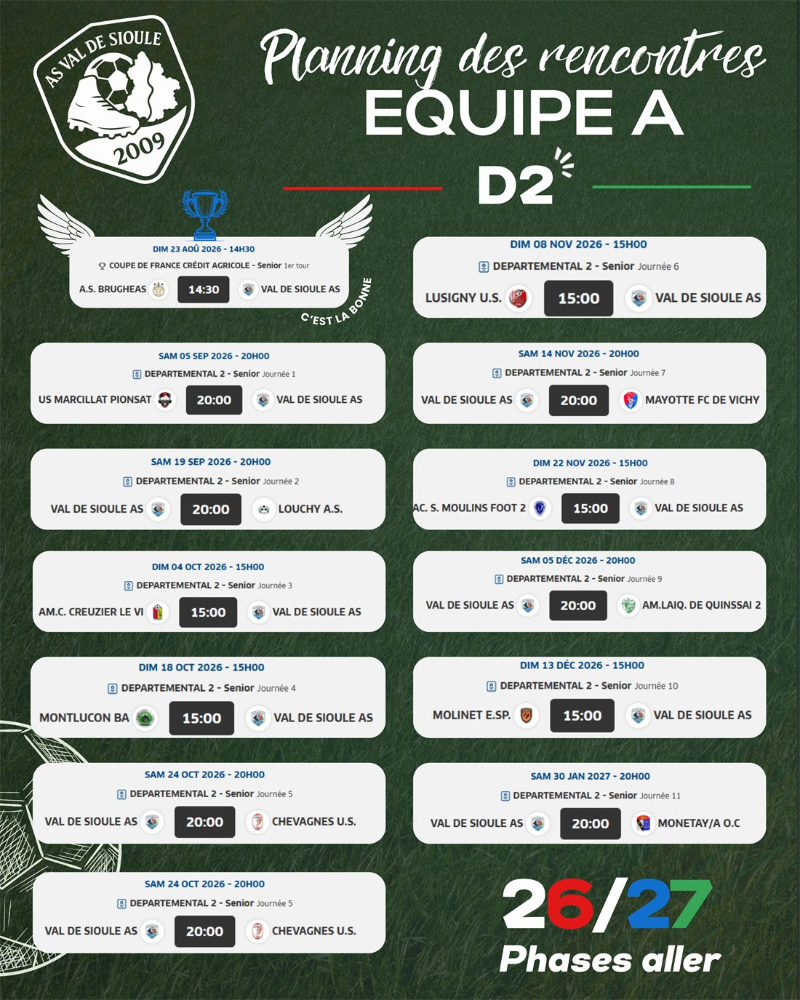
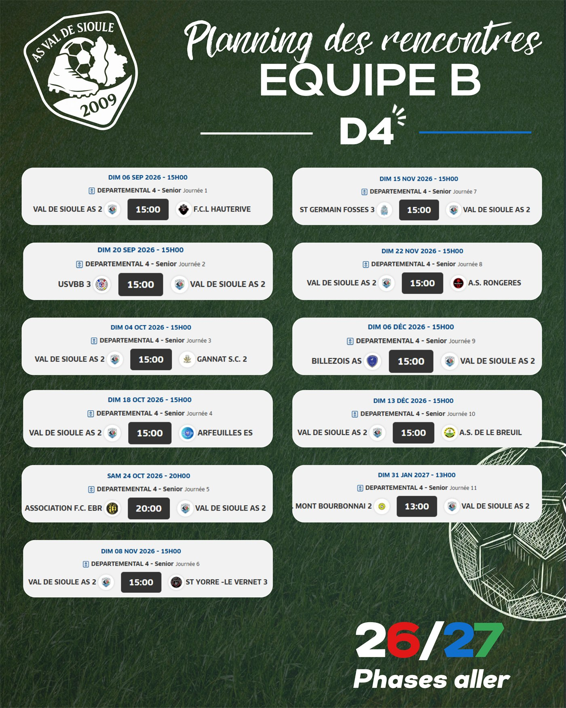

Accueil/Calendrier
Saison 2026-2027 · phase allerCalendrier des matchs
23 rencontres programmées, dont — à domicile au stade municipal de Broût-Vernet.
Filtrez comme vous voulez
Toutes les rencontres
Les horaires sont ceux communiqués par le District de l'Allier et peuvent évoluer. En cas de doute, la page Facebook du club fait foi.
Venir voir un match
Rendez-vous au stade
Les rencontres à domicile se jouent au Stade Municipal de Broût-Vernet. Entrée libre, buvette ouverte à chaque match, et une ambiance qui vaut le déplacement.
- Les séniors A reçoivent le plus souvent le samedi à 20 h.
- La réserve joue en général le dimanche à 15 h.
- Buvette tenue par les bénévoles : venez leur dire bonjour.
Résultats en direct
Le club publie les résultats et les compositions sur sa page Facebook après chaque journée. Les classements officiels sont consultables sur le site du District de l'Allier.
Les affiches officielles

